Rediseño web · Noviembre de 2026
La web nueva de MEXA Arquitectos
Propuesta de sitio para un despacho de arquitectura e interiorismo con bases en Ciudad de México y Mérida. Es una demo navegable, construida con los textos y las fotos que MEXA ya tiene publicados.
- Cliente
- MEXA Arquitectos
- Alcance
- Diagnóstico, arquitectura del sitio, diseño, desarrollo y base SEO
- Estado
- Demo navegable, sin publicar
- Créditos
- Nebu Lab · José Gaspard
Contexto
Un despacho con obra construida y premiada
Todo lo que sigue sale de su propia web. Donde MEXA no publica un dato, el dato no aparece.
Así se presentan, literal
«Fundado en 2015, Mexa Arquitectos es un despacho de arquitectura e interiorismo con bases en la Ciudad de México y Mérida que busca soluciones innovadoras para todo tipo de proyectos. A lo largo de nuestra trayectoria, nos hemos dedicado a crear atmósferas únicas que satisfacen las necesidades de cada uno de nuestros clientes.»
«Trabajamos desde la concepción del proyecto y del programa arquitectónico hasta el término de la construcción o incluso hasta la promoción, venta y administración de desarrollos inmobiliarios, cuidando cada detalle en todas las etapas del proceso para lograr un resultado de la más alta calidad. Tenemos presencia en toda la República Mexicana.»
Lo que hay para trabajar
- 38 proyectos publicados y 302 fotografías: casas, vivienda, oficinas, restaurantes y desarrollos inmobiliarios.
- Primer lugar en la categoría de restaurante-bar del Premio Noldi Schreck 2019, con Sempai.
- Finalistas en la categoría de mejor interiorismo corporativo y comercial del Premio Firenze Entremuros, con Nana.
- Parc Art Helsinki, proyecto seleccionado por el jurado del concurso internacional The Next Helsinki.
- Un isotipo propio: un cubo isométrico de línea, en color arena.
El reto
La web actual no deja ver la obra ni deja que Google la lea
El sitio está hecho en Wix y es una sola página con anclas. Lo medimos el 14 de noviembre de 2026; cada cifra va tal cual salió, con su origen.
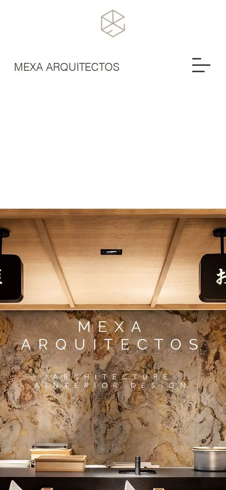
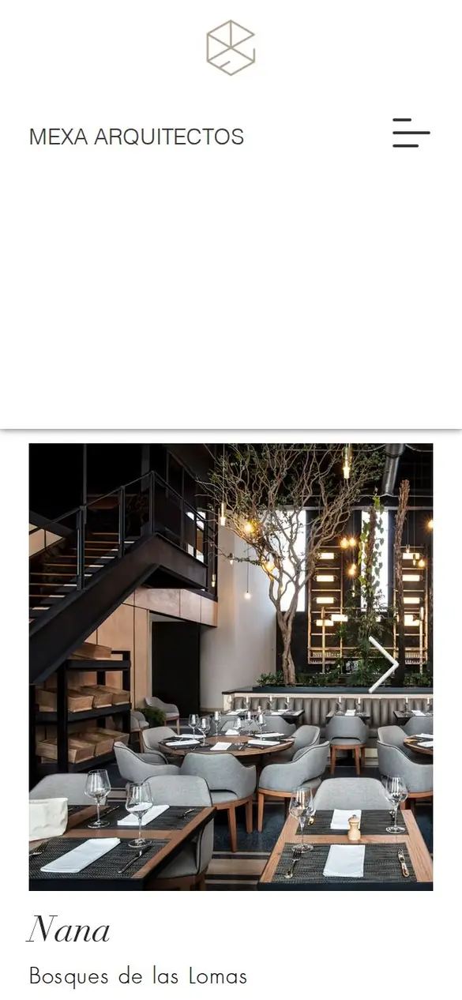
Hallazgos medidos
- 39 de 41
- Las URL del sitemap empiezan por «copia-de-…». En al menos 35 el nombre de la dirección es el de otro proyecto: /copia-de-casa-alcazar es «CASA MALINALCO» y /copia-de-oficinas-novartis es «OFICINAS ISS».
- Rastreo
- 40 de 40
- Fichas de proyecto sin meta description, sin H1 y sin datos estructurados. Media de 34 palabras visibles por ficha.
- Rastreo
- 1 H1
- Un solo H1 en todo el sitio, en inglés y sin marca ni ciudad: «ARCHITECTURE &INTERIOR DESIGN».
- Rastreo y navegador
- 297 caracteres
- Meta description de la portada; Google corta hacia los 155-160. Solo menciona Ciudad de México.
- Rastreo
- 1 mención
- Mérida aparece una vez en el texto de la portada y cero veces en title, meta, H1 y datos estructurados.
- HTML de la portada
- 404
- /nosotros, /proyectos y /contacto no existen: todo son anclas de una sola página, con títulos «01 Nosotros», «02 proyectos», «03 premios» y «04 contacto».
- curl
- 73 de 275
- Imágenes sin texto alternativo (27 %); en la portada, 17 de 33. Los que hay son nombres de archivo, como «_EXT_003_.jpg» o «SEMPAI_DESPACHOMEXA_001.jpg».
- Rastreo y navegador
- 5 familias
- Raleway, Helvetica Light, Avenir Light, Arial y Didot en cursiva conviven en la misma página.
- Estilos computados
- 1,4-1,5 MB
- Peso de una ficha con 3 fotos, en 123-139 peticiones. De eso, 0,83-0,92 MB son JavaScript y solo 0,28 MB son imágenes.
- Navegador (CDP)
- 1,5-1,8 MB
- Carga completa de la portada en móvil (1,1-1,2 MB en escritorio), con 96-138 peticiones y 46-75 archivos JS. El HTML solo pesa 682 KB sin comprimir.
- curl y navegador (CDP)
- 12.361 px
- Alto de la portada en móvil, unas 15 pantallas. Wix sirve una versión aparte a 320 px de ancho, con 6-7 textos por debajo de 12 px.
- Navegador
- 3 de 40
- Fichas enlazadas desde el HTML de la portada.
- HTML de la portada
- 0 de 41
- Páginas con og:image: al compartir un proyecto por WhatsApp o LinkedIn no sale foto.
- Rastreo
- 0 enlaces
- Ni tel: ni WhatsApp. El único contacto con un toque es el correo.
- HTML de la portada
- 5525372402
- Teléfono de los datos estructurados; no coincide con los dos visibles (+52 55 3233 6984 y +52 99 9364 7858). La dirección es solo de CDMX: sin Mérida, sin horario y sin perfiles sociales.
- HTML de la portada
- 2023-02-24
- Fecha de última modificación de las 41 URL del sitemap. El pie de página dice «© 2020».
- Sitemap
Cómo se midió: rastreo con curl de las 41 URL del sitemap y carga real con Chromium a 1440×900 y en móvil (390×844), con bytes transferidos por CDP. No se incluyen tiempos de carga: el servidor de medición estaba cargado y los tiempos salían inflados. Tampoco hay PageSpeed Insights, datos de campo (CrUX) ni Search Console: no tenemos acceso.
Lo que ya está bien
- HTTPS con HSTS y redirecciones 301 desde http y sin www.
- Canonical en todas las páginas, robots.txt abierto y 404 real.
- CLS de 0 a 0,02: la página no salta al cargar.
- Verificación de Search Console ya puesta.
En Google
- «despacho de arquitectos en Mérida Yucatán»: MEXA no aparece entre los resultados.
- «despacho de arquitectura e interiorismo CDMX»: MEXA no aparece entre los resultados.
- Los despachos que sí salen usan lo que aquí falta: title con «despacho de arquitectos + ciudad» y una página propia por ciudad.
Consulta hecha por API, con orden orientativo; no son posiciones oficiales. La búsqueda de marca queda pendiente de confirmar a mano en Google México.
Objetivos
Seis objetivos, cada uno atado a un hallazgo
No hay cifras de resultado: la web nueva no está publicada. Esto es lo que la demo resuelve y cómo.
Que la obra se vea
HoyHoy la portada son 25 miniaturas iguales y la ficha, un carrusel.
En la demoFotos a sangre y con anchos desiguales, una sola familia tipográfica y fondo blanco: el color lo pone la obra.
Una página de verdad por proyecto
Hoy40 de 40 fichas sin H1, sin descripción y con 34 palabras de media.
En la demo38 fichas con H1, lugar, año, estado y tipo cuando MEXA los publica, migas de pan, datos estructurados y título de 60 caracteres o menos.
Que Mérida exista
HoyUna mención en todo el sitio.
En la demoMérida en el H1 de la portada, en el title, en el filtro por lugar del índice y en el mapa de sedes del estudio.
Encontrar un proyecto
HoySin índice: /proyectos da 404.
En la demoÍndice con filtros por lugar y por estado, y dos vistas, rejilla y lista.
Contacto a un toque
HoyCero enlaces de teléfono; un formulario de tres campos.
En la demoTeléfonos y correo pulsables en el menú móvil, el pie y la página de contacto; formulario de proyecto con validación accesible.
Menos peso
HoyFicha de 1,4-1,5 MB, de los que 0,83-0,92 MB son JavaScript.
En la demoSitio estático, sin gestor ni base de datos. Objetivo: ficha por debajo de 0,5 MB. La demo todavía no llega (ver «Qué sigue»).
Referentes y decisiones
Trece despachos abiertos y medidos antes de dibujar
Taller Héctor Barroso, Sordo Madaleno, Tatiana Bilbao Estudio, PRODUCTORA, Rojkind, Esrawe, BIG, Snøhetta, Herzog & de Meuron, MVRDV, OMA, David Chipperfield y Telha Clarke, a 1440×900, leyendo estilos computados y texto real.
Navegación
Lo que hacenMenú mínimo de 3 a 5 entradas: Barroso, Rojkind, Chipperfield.
Lo que decidimosTres entradas: Proyectos, Estudio y Contacto.
Índice de proyectos
Lo que hacenConmutador de vista (Snøhetta, MVRDV, Chipperfield, Rojkind) y, con pocos proyectos, filtros de 4 a 6 enlaces de texto en una línea.
Lo que decidimosFiltros de texto por lugar y por estado; vistas de rejilla y de lista. Sin paneles desplegables.
Ficha de proyecto
Lo que hacenCabecera en una línea, ficha técnica breve y secuencia de fotos con ritmo de anchos, no galería uniforme (Snøhetta, Chipperfield, Bilbao).
Lo que decidimosNombre, ficha técnica de hasta seis datos, galería de anchos desiguales y «Siguiente proyecto» al cierre. Si MEXA no publica un dato, la fila se omite.
Tipografía
Lo que hacenUna sola familia en casi todos; la letra no compite con la foto.
Lo que decidimosArchivo variable, una familia con dos ejes: ancho 125 % en titulares y 100 % en texto.
Color
Lo que hacenFondo blanco puro y texto negro en 8 de los 13; el gris solo en metadatos.
Lo que decidimosBlanco puro, tinta cálida y el arena del logotipo solo en líneas e isotipo.
Movimiento
Lo que hacenSobrio y corto: transiciones medidas de 0,45 a 1 s; revelado con opacidad y desplazamiento corto.
Lo que decidimosEntradas de 0,9 a 1,1 s con la misma curva; solo se animan transform, opacity y clip-path.
3D
Lo que hacen0 elementos canvas en las 13 portadas: los despachos de primer nivel no usan WebGL. Solo se justifica si explica arquitectura y en un único punto.
Lo que decidimosUna maqueta en el héroe que se abre como axonometría explotada. Carga en diferido, tiene imagen fija de respaldo y se apaga con movimiento reducido.
Lo que se evita
Lo que hacenVarias familias, cursivas de acento, numeración «01 / 02 / 03», tarjetas con sombra, carruseles automáticos, precargas largas.
Lo que decidimosNada de eso está en la demo. La estructura son filetes de 1 px y una rejilla de 12 columnas.
El concepto: el cubo abierto
El único signo propio de MEXA es su isotipo, un cubo isométrico de línea con una arista abierta. La web lo convierte en su pieza central: en el héroe, ese cubo es una vitrina en 3D y dentro se levanta una maqueta abstracta hecha con el vocabulario de sus casas, con losas horizontales en voladizo, un muro de mampostería y un volumen acristalado.
Al hacer scroll la maqueta se abre como una axonometría explotada, el dibujo con el que un arquitecto explica un edificio. De ahí sale lo demás: titulares anchos y bajos como las losas, blanco de obra y ningún adorno.
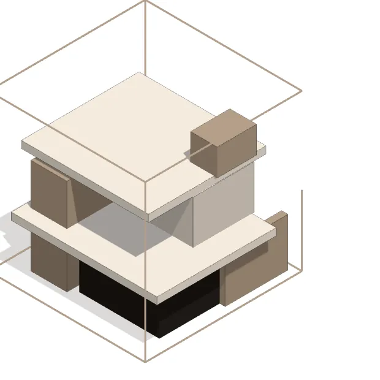
Arquitectura del sitio
De una página con anclas a 42 páginas con dirección propia
Cada proyecto tiene su URL con su nombre. Las páginas de tipología y de ciudad están planteadas, pero no montadas: dependen de datos que MEXA tiene que confirmar.
Inicio
/
Proyectos
/proyectos/
38 fichas
/proyectos/[nombre]/
Estudio
/estudio/
Contacto
/contacto/
Tipologías
4 páginas · fase siguiente
Ciudades
2 páginas · fase siguiente
Reconocimientos
1 página · fase siguiente
Sistema visual
Una familia, siete colores y una rejilla
La web actual mezcla cinco familias tipográficas. La nueva usa una, variable, servida desde el propio sitio.
Archivo variable · peso 100-900 · ancho 62-125 %
Proyectos
Casas, vivienda, oficinas y restaurantes
Casa en la montaña
Trabajamos desde la concepción del proyecto y del programa arquitectónico hasta el término de la construcción.
Paleta
El arena es el color del logotipo de MEXA. Nunca se usa como texto sobre blanco; ahí el acento es barro, que sí cumple contraste.
Rejilla y espacio
Doce columnas, ancho máximo de 1760 px y márgenes de 20 a 64 px. Las fotos se colocan con anchos desiguales, nunca en retícula uniforme. Puntos de corte en 1000, 820 y 420 px.
Componentes
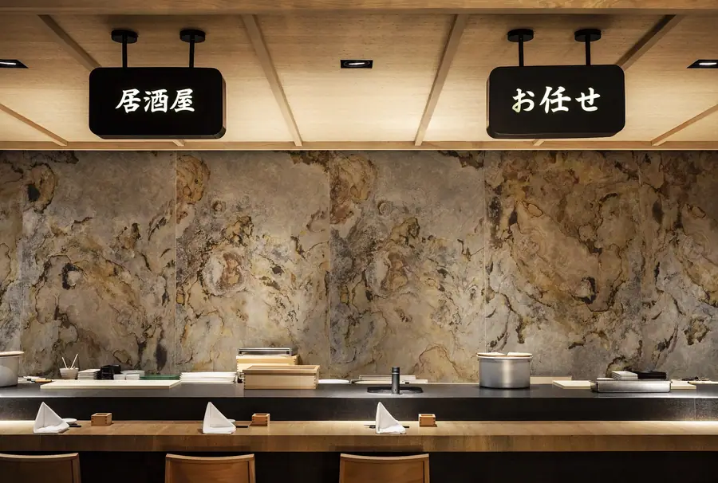
Sempai
- Bosques de las Lomas
- 2019
- Construido
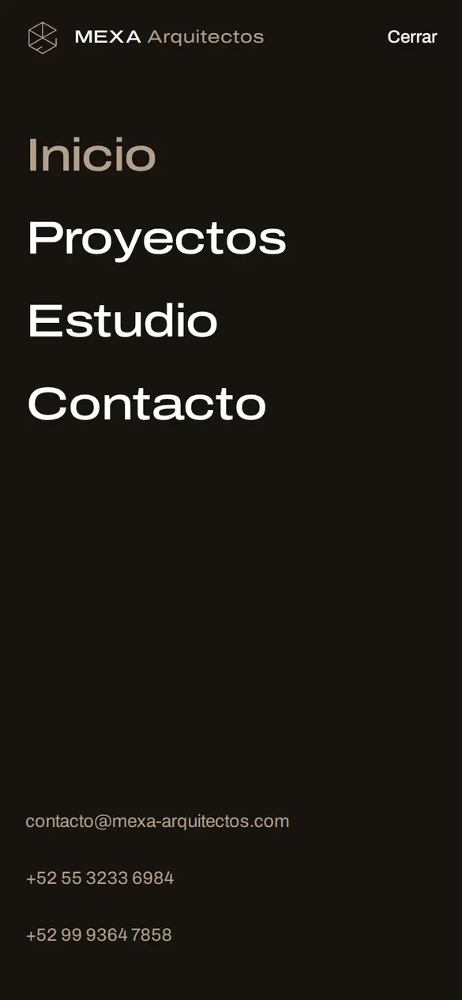
Pantallas
El sitio nuevo, capturado tal cual está
Capturas reales de la demo a 1440 y 390 px. Fotos y textos son los de MEXA.
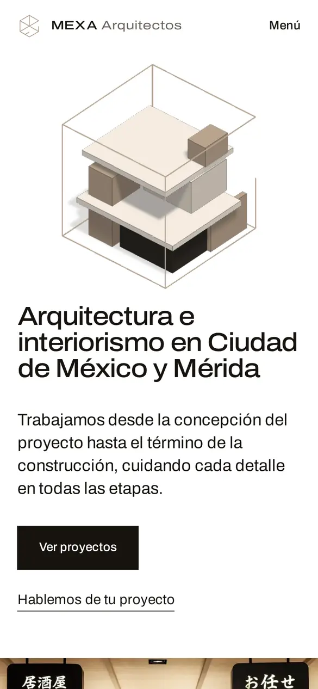
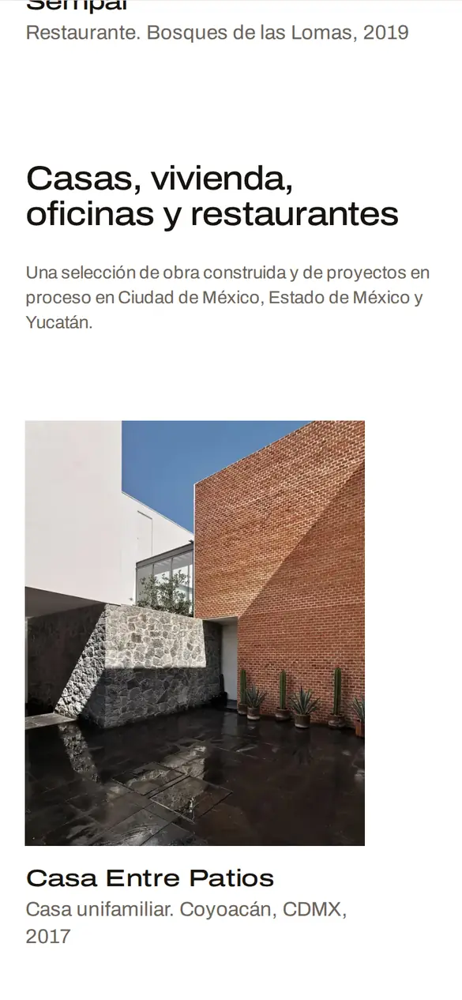
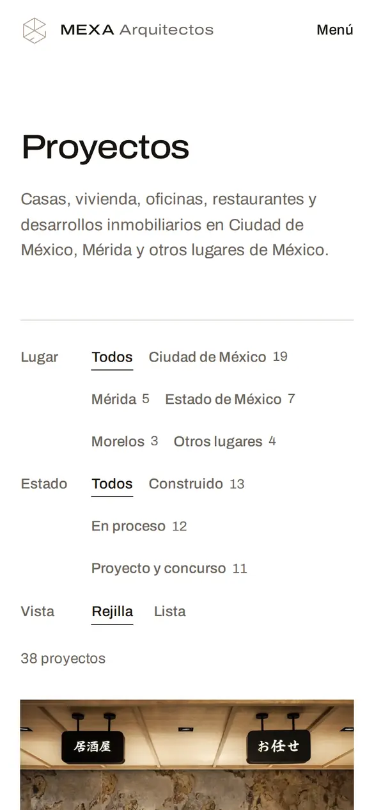
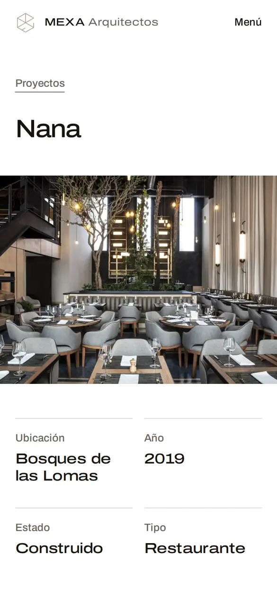
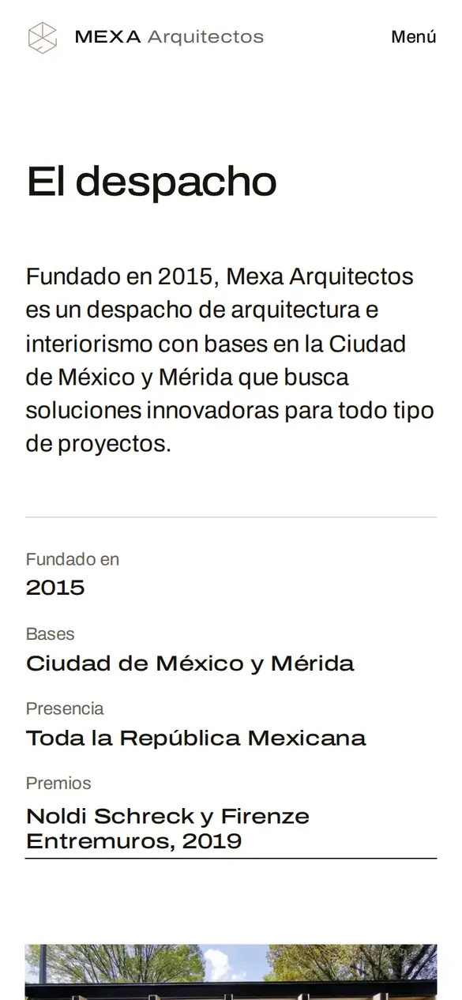
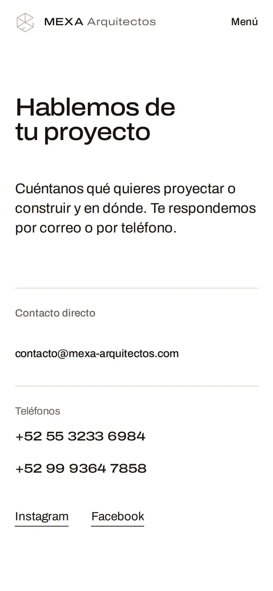
Comprobación de la demo
- 420 cargas
- 42 páginas en 5 anchos (320, 390, 768, 1280 y 1920 px) y dos motores, Chromium y WebKit, recorriendo cada página completa.
- Playwright
- 0
- Errores de consola, peticiones fallidas, desbordes horizontales, imágenes rotas y bloques que se queden ocultos, en los dos motores.
- Playwright
- 5 de 5
- Anchos en los que la maqueta 3D pinta de verdad, sin recurrir a la imagen de respaldo, en cada motor.
- Playwright
Antes y después
La misma pantalla, a 1440 px
Arrastra la línea o usa las flechas del teclado. A la izquierda queda la web actual; a la derecha, la nueva.
Movimiento y 3D
Un solo momento de atrevimiento; lo demás, corto y sobrio
El 3D está en un único punto y explica arquitectura. El resto del movimiento acompaña la lectura.
Los dos clips están grabados con Playwright en un servidor sin tarjeta gráfica y acelerados (×5 el héroe, ×1,3 la transición), así que no representan la fluidez real. Los cuadros por segundo en teléfonos reales están pendientes de medir.
Tiempos
| Qué | Cuándo | Duración |
|---|---|---|
| Titular por líneas | Al entrar en pantalla | 1,05 s, 85 ms entre líneas |
| Texto y bloques | Al entrar en pantalla | 0,9 s, opacidad y 22 px de subida |
| Imagen | Al entrar en pantalla | Cortina de 1,1 s y escala de 1,14 a 1 en 1,6 s |
| Cortina entre páginas | Clic en un enlace interno | Cubre en 520 ms y se retira en 650 ms |
| Menú móvil | Al abrir | 520 ms; los enlaces entran cada 60 ms |
| Maqueta 3D | Carga, puntero y scroll | 1,25 s de entrada, 100 ms entre piezas; giro de hasta 0,22 rad |
Con «reducir movimiento» activado en el sistema no hay cortina ni revelados, y la maqueta se sustituye por su imagen fija. Lo mismo ocurre si el equipo no tiene WebGL. En reposo, el 3D deja de dibujar.
Plan SEO
Cada página, con su título y su búsqueda
Cinco tipos de página ya están en la demo. Las siete restantes se montan cuando MEXA confirme qué proyecto va en cada tipología y en cada ciudad.
| Ruta | Title (60 caracteres o menos) | Búsqueda objetivo | Estado |
|---|---|---|---|
| / | MEXA Arquitectos · Despacho de arquitectura en CDMX y Mérida | mexa arquitectos · despacho de arquitectura | En la demo |
| /proyectos/ | Proyectos de arquitectura e interiorismo · MEXA Arquitectos | proyectos de arquitectura méxico | En la demo |
| /proyectos/[nombre]/ (38 fichas) | [Proyecto] · [tipología] en [ciudad] · MEXA Arquitectos | nombre del proyecto · [tipología] + [zona] | En la demo |
| /despacho/ (en la demo, /estudio/) | El despacho · MEXA Arquitectos, desde 2015 | mexa arquitectos quiénes son | En la demo |
| /contacto/ | Contacto · MEXA Arquitectos en CDMX y Mérida | mexa arquitectos contacto · teléfono | En la demo |
| /proyectos/residencial/ | Casas de autor · Arquitectura residencial · MEXA Arquitectos | arquitectos para casas · diseño de casas cdmx | Fase siguiente |
| /proyectos/vivienda-y-desarrollos/ | Vivienda y desarrollos inmobiliarios · MEXA Arquitectos | arquitectos desarrollos inmobiliarios · diseño de edificios de departamentos | Fase siguiente |
| /proyectos/oficinas/ | Diseño de oficinas corporativas · MEXA Arquitectos | diseño de oficinas cdmx · interiorismo corporativo | Fase siguiente |
| /proyectos/interiorismo/ | Interiorismo comercial y de restaurantes · MEXA Arquitectos | interiorismo cdmx · diseño de restaurantes | Fase siguiente |
| /arquitectos-cdmx/ | Arquitectos en CDMX · Despacho de arquitectura MEXA | arquitectos cdmx · despacho de arquitectos cdmx | Fase siguiente |
| /arquitectos-merida/ | Arquitectos en Mérida, Yucatán · MEXA Arquitectos | arquitectos en mérida · despacho de arquitectos mérida yucatán | Fase siguiente |
| /reconocimientos/ | Premios y reconocimientos · MEXA Arquitectos | premio noldi schreck sempai · mexa arquitectos premios | Fase siguiente |
En la migración
- Redirección 301 de las 39 URL «copia-de-…» y de /nana a su ficha nueva, con mapa de redirecciones.
- Datos estructurados por oficina, con el teléfono visible correcto, además de migas de pan e imagen en cada ficha.
- Texto alternativo descriptivo foto a foto y og:image por página.
- La demo lleva noindex; se retira solo al publicar en el dominio real.
Lo que no sabemos todavía
- Volumen de búsqueda: la herramienta devolvió 0 en Bing México para las 11 consultas probadas y no hay dato de Google. No se estima.
- Posiciones actuales: sin acceso a Search Console de MEXA no hay línea base oficial.
- Analítica: no aparece ningún identificador de GA4 o GTM en el HTML de la portada; hay que confirmarlo con el despacho.
Qué sigue
Lo que falta para publicar
La demo no tiene métricas de «después» porque no está en línea. Estos son los pasos, y lo que necesitamos de MEXA.
De MEXA
- Logotipo en vector: el único disponible es un PNG de 333 px y el isotipo de la demo es un redibujo.
- Ciudad, tipología y créditos de cada proyecto, y fotos nuevas si las hay.
- A qué sede corresponde cada teléfono, y si quieren mostrar direcciones, horario y WhatsApp.
- Acceso a Search Console y a la analítica para fijar la línea base antes del cambio.
- Decidir si entran las páginas de tipología, de ciudad y de reconocimientos.
De nuestro lado
- Peso: la ficha de Casa DB carga hoy 1,83 MB en móvil, por encima del objetivo de 0,5 MB. Faltan AVIF y compresión en el servidor.
- Pruebas en teléfonos reales: cuadros por segundo del 3D en iPhone y Android, y scroll rápido en un móvil lento.
- Texto alternativo descriptivo en las 302 fotos.
- Publicación: dominio, redirecciones 301, canonical y og:image absolutos, y retirar el noindex.
- Medir a partir de la publicación: páginas indexadas, impresiones y clics por ciudad, y contactos desde el formulario y los teléfonos.
Rediseño web de MEXA Arquitectos
Nebu Lab · José Gaspard